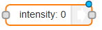
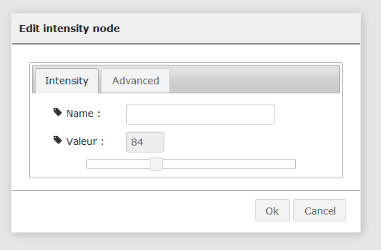

Some music !
This tutorial will show you how to use the node Sound to play some music radio from the web.
Multiple sounds can be played at the same time (a beep or an alert on top of a music) by using two Sound nodes.
A minimal sample
The blue node is the sound node from the palette:
Drag it to the workspace and double click it.
You can choose any track on the web or on your Pi if the path is correct.
However, be aware that your file must not have any space in it’s name !
To take an example, we will use this radio available on the web :
http://listen.radionomy.com/KISSJazz
Now you need to start the music. There an “intent” for that: a node that puts in the flow intentions as “open”.

Drag a Go node in front of it to launch the flow.
Here is the result:
Clic on the red button “activate” on the upper right corner to activate the flow changes.
Then launch the flow using the Go node. If a HiFi device is plugged into the jack of the Pi, you can now ear music!
Stop the music
Now you are also able to add the “close” intent node and use it to stop the music.
Change the volume
To change the volume, use the intensity node intent. It is use to set the level of something.


You can use the value 100 pour high level, and 40 for moderate (as you feel).
Link them as below:
I added two display nodes so I can see any error message in the display tab.
Play a beep
There is 50 predefined sounds you can play with the Sound node:
A full path (beginning with /) can also be used, with an extension if non mp3 file.
More Radios !
There is a library (use the menu on the right, Import/library/Sound Demos) with some radios you can play with.
Want to go further ?
In this tutorial, we set the music by editing the node.
It is possible to “calculate” the music adress before entering the sound node, so it can depend of the context (salsa when its cold, Jazz when its hot).
It uses the Set node that changes the value of a particular track of the flow.
Now you have to replace the Go nodes by context triggers…
Credits
Based on the wonderful lib https://github.com/turingou/player.